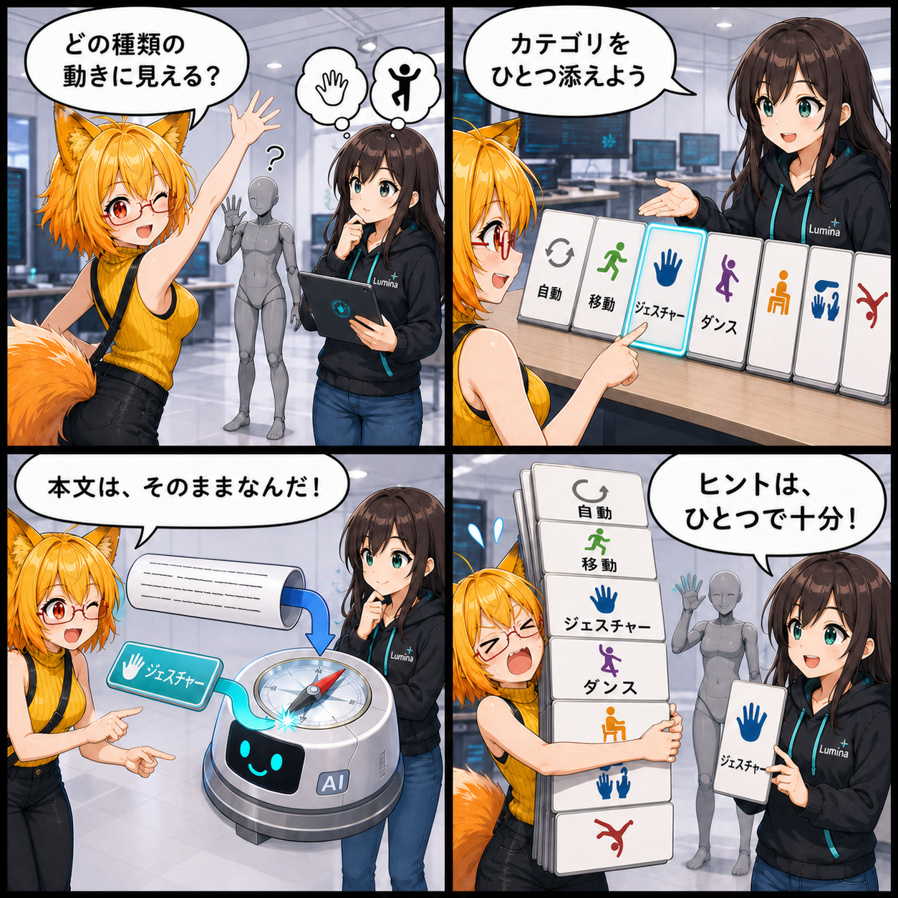

動きの意味を、ひと押しで。AIアニメーションにカテゴリヒントを加えた日
日本語で動きを指示するAIアニメーション生成に、動作の種類をひとつ選んで意味を補えるカテゴリタグを追加しました。文章そのものは書き換えず、別のヒントとして生成側へ渡します。
main ブランチでは集計期間内に4件のコミットがありました。集計終了時点のHEADは 63855cc（「Add AI motion category hints」）です。Viewer作業ツリーの未コミット差分は実装日を確定できないため、本日の実績に含めていません。集計期間は 2026-08-26 03:00:00 JST から 2026-08-27 02:59:59 JST までです。
文章だけでは曖昧な「動き」を補う
AIアニメーション生成では、日本語の指示からアバターの動きを組み立てます。ただ、短い指示には複数の意味が重なることがあります。そこで入力欄の直下に、自動、移動、ジェスチャー、ダンス、姿勢・遷移、日常動作、物体操作、アクロバットの8つのタグを追加しました。
タグは単一選択です。既定の自動なら従来どおり日本語プロンプトだけで生成し、必要なときだけ利用者が動作の方向性をひとつ補えます。
本文へ足さず、別のヒントとして渡す
カテゴリ名はプロンプト本文へ文字列として追記しません。選択値をcategoryHintという別フィールドで専用workerへ渡すため、利用者が書いた文章と、UIで選んだ補助情報を混ぜずに扱えます。
明示カテゴリが選ばれた場合は、そのカテゴリに属する既知の動作概念から近いものを探します。十分に近い概念が見つかったときだけ、元の文章から作った表現を主成分のまま、概念側の表現を弱く混ぜて曖昧さを減らします。ヒントが文章を置き換えるのではなく、解釈の向きを少し整える設計です。
検証済みの概念だけを検索対象にする
2026-08-26時点の検索indexは199概念です。内訳は移動27、ジェスチャー47、ダンス32、姿勢・遷移93。動作スタイルだけを表す15語彙は検索対象から外しています。
一方、日常動作・物体操作・アクロバットはタグとして選べますが、確認済みの正式語彙が増えるまでは未検証概念を検索indexへ混ぜません。この3カテゴリはタグ情報を保ったまま通常生成へ進みます。選択肢を見せることと、未確認の知識を使うことを分けています。
技術的なポイント
- カテゴリタグは2行4列、8項目の単一選択UI
自動は空のcategoryHintとして渡し、従来の日本語プロンプト経路を維持- 明示カテゴリは専用workerへ本文と別フィールドで送信
- 近傍概念が条件を満たした場合だけ、元の表現を主にした弱いブレンドを適用
- 生成結果表示へカテゴリと概念補助の有無を追加
- 生成中はカテゴリボタンを操作不可にし、選択状態を視覚表示
ほかにも進んだこと
同じ集計期間には、Meta XR Core v205の正式導入、VABロード各段階の計測とSkins・Humanoidデータの先読み、監査で見つかった取込・アーカイブ・VR入力・UI・物理処理などの不具合と負荷問題の修正も進みました。
補足
期間内のコミット差分は59ファイル、2,522行追加、594行削除です。なお、現在のViewer作業ツリーには未コミット差分がありますが、集計期間内に実装された事実を確定できないため記事へ含めていません。
4コマの裏話
今回は曖昧な身振りから始め、文章とカテゴリが別々の経路でAIへ届く様子を「別便」として描きました。最後はろひが全カテゴリを抱え込もうとして、単一選択の仕様に止められるオチです。ヒントが主役を奪わないことを、会話と小道具で見せています。
まとめ
AIアニメーション生成へ、動作の意味をひと押しで補えるカテゴリタグを追加しました。日本語の文章はそのままに、必要なときだけ検証済み概念の方向へ解釈を寄せられます。既定の自動は従来経路を守り、未検証カテゴリは無理に概念検索へ混ぜない、安全側の拡張です。
本日のひとこと： ヒントはひとつ。主役は、書いた言葉。